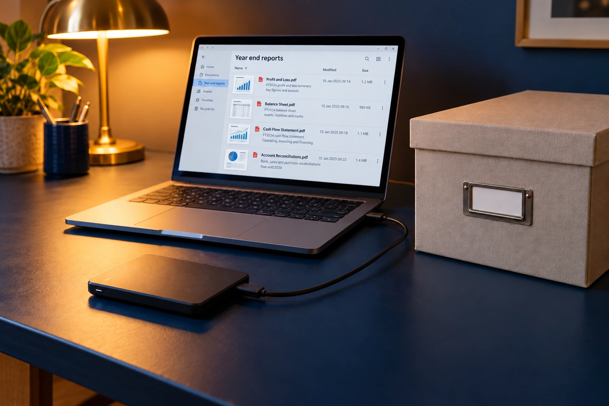
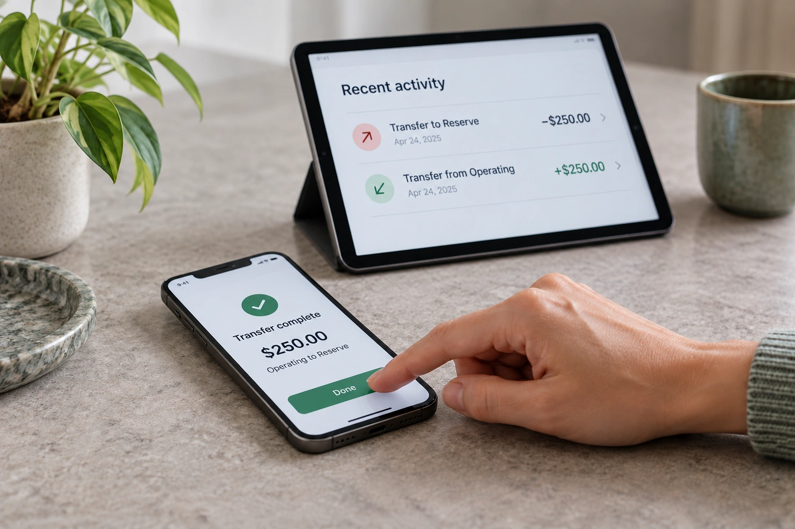
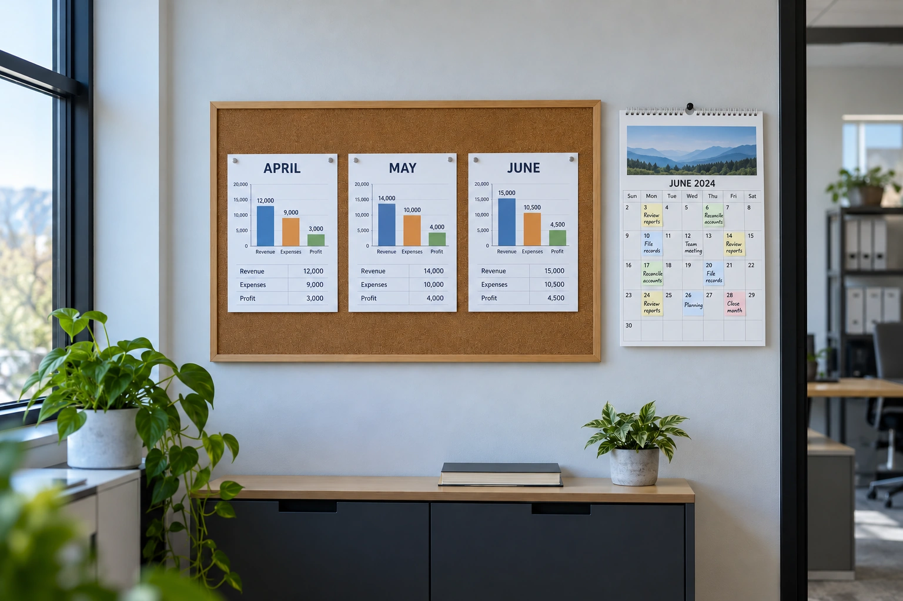
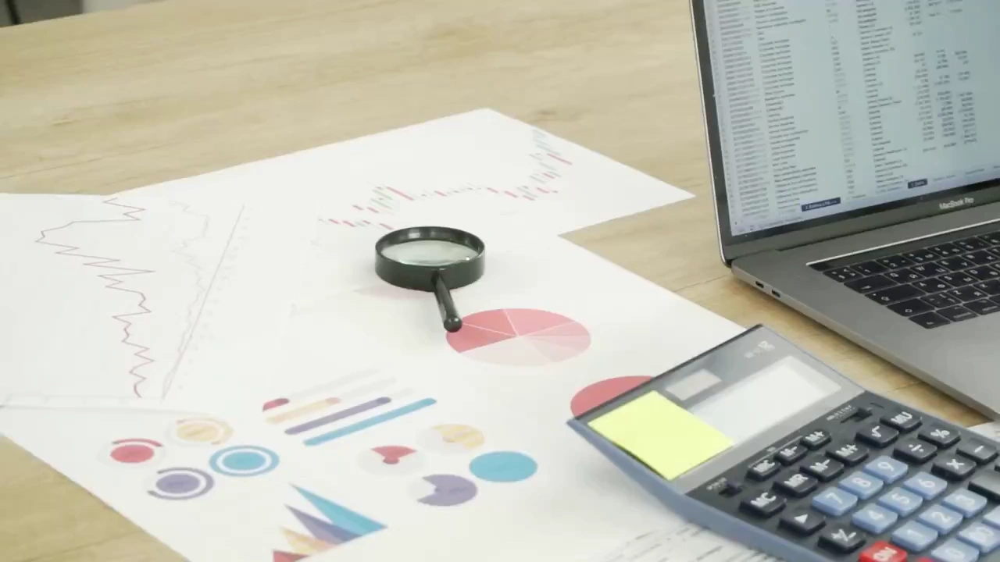

assets/photos/what-questions-should-i-ask-during-a-bookkeeping-review-html.webp 1448 x 1086assets/photos/what-records-should-be-kept-with-my-tax-ready-books-html.webp 1448 x 1086

assets/photos/what-reports-should-i-save-at-the-end-of-the-year-html-scene-v2.webp 1536 x 1024assets/photos/what-should-be-checked-before-closing-the-books-for-the-year-html.webp 1448 x 1086assets/photos/what-should-i-check-before-approving-monthly-reports-html.webp 1448 x 1086assets/photos/what-should-i-check-before-changing-an-opening-balance-html-scene-v2.webp 1536 x 1024assets/photos/what-should-i-do-if-my-bookkeeping-is-several-months-behind-html.webp 1448 x 1086assets/photos/what-should-i-give-my-bookkeeper-every-month-html.webp 1448 x 1086assets/photos/what-should-i-prepare-before-hiring-a-bookkeeper-html-scene-v2.webp 1536 x 1024assets/photos/what-should-my-books-look-like-before-i-give-them-to-my-tax-preparer-html.webp 1448 x 1086assets/photos/when-should-monthly-bookkeeping-reports-be-ready-html.webp 1536 x 1024assets/photos/where-do-owner-contributions-belong-in-my-books-html-scene-v2.webp 1536 x 1024assets/photos/which-report-shows-what-my-business-owes-html-scene-v2.webp 1536 x 1024assets/photos/why-can-a-profitable-business-have-low-cash-html-scene-v2.webp 1536 x 1024assets/photos/why-do-i-have-so-many-uncategorized-transactions-html.webp 1448 x 1086assets/photos/why-do-my-expenses-increase-when-sales-increase-html-scene-v2.webp 1536 x 1024

assets/photos/why-do-transfers-show-up-as-expenses-in-my-books-html-scene-v2.webp 1536 x 1024assets/photos/why-does-my-bank-balance-not-match-my-books-html.webp 1536 x 1024assets/photos/why-is-a-card-balance-negative-in-my-software-html-scene-v2.webp 1536 x 1024assets/photos/why-is-income-tracking-different-from-tracking-deposits-html-scene-v2.webp 1536 x 1024

assets/photos/why-should-i-review-the-same-reports-every-month-html-scene-v2.webp 1536 x 1024assets/photos/why-should-loan-balances-be-reviewed-each-month-html.webp 1448 x 1086assets/photos/will-a-bookkeeper-work-with-my-tax-preparer-html-scene-v2.webp 1536 x 1024assets/photos/year-end-bookkeeping-html.webp 1448 x 1086assets/video/about-poster.webp 1280 x 720

assets/video/home-poster.webp 1280 x 720assets/video/monthly-poster.webp 1280 x 720assets/video/repair-poster.webp 1280 x 720